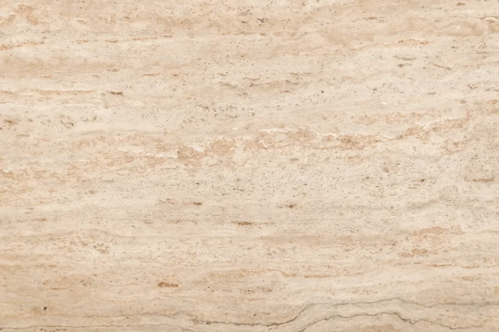
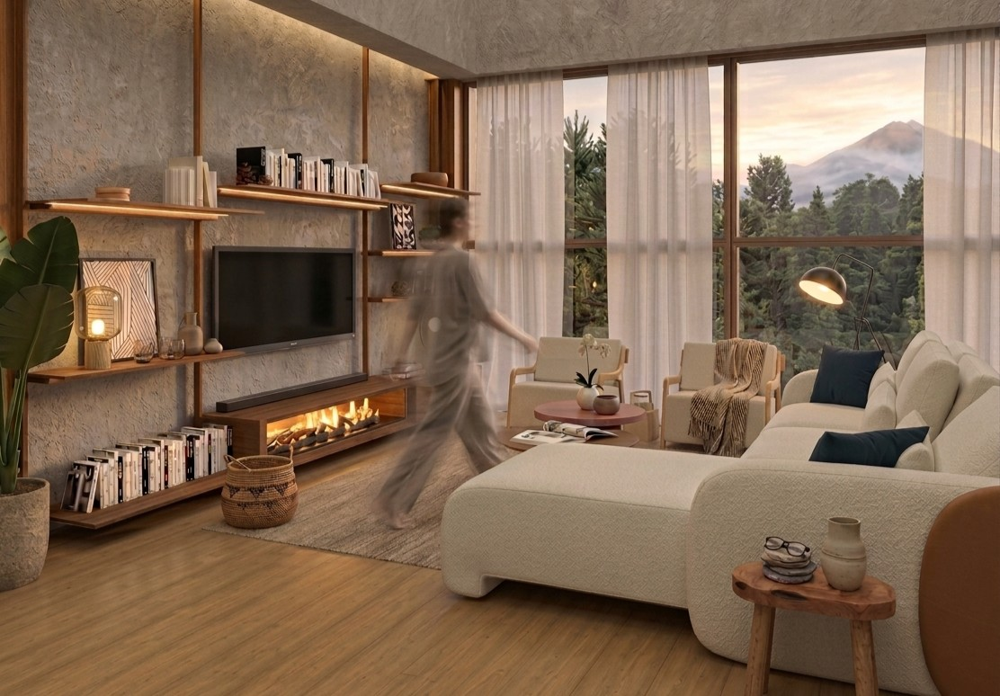
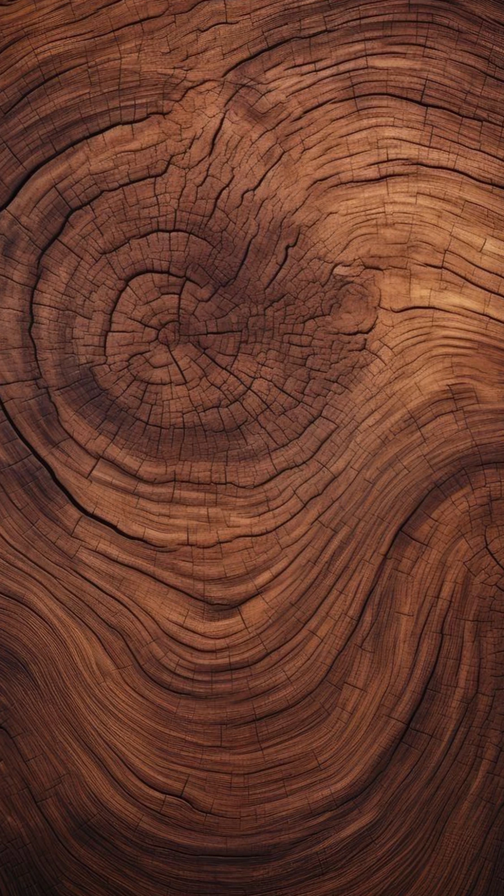
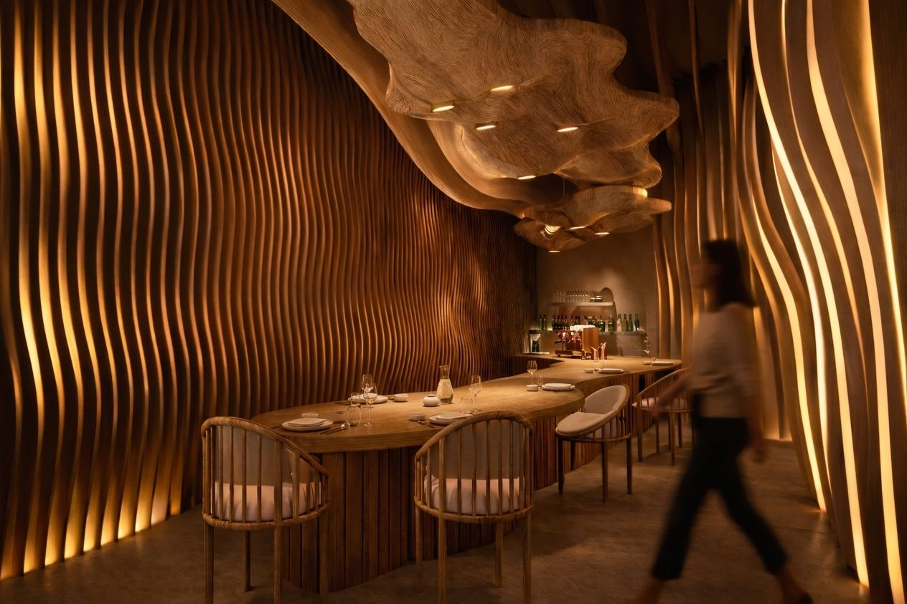
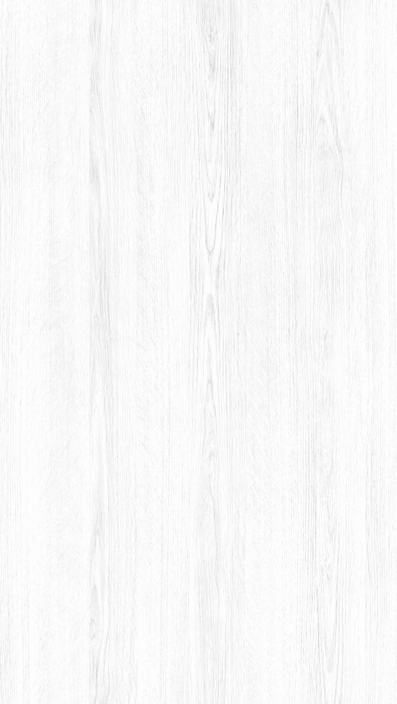
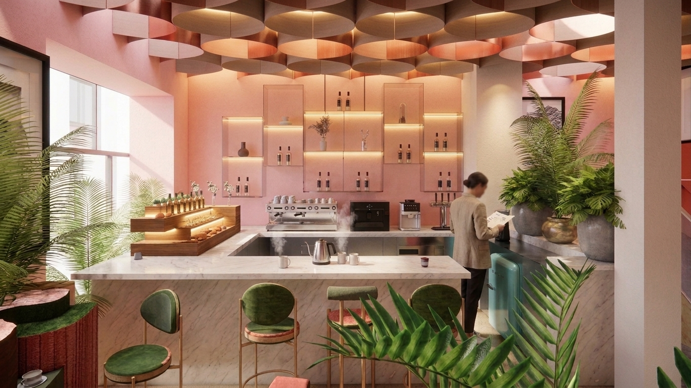
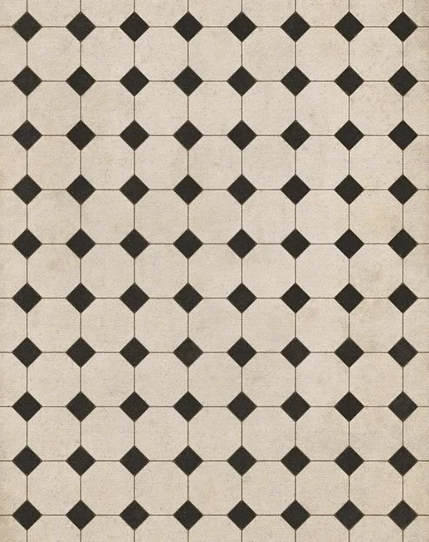
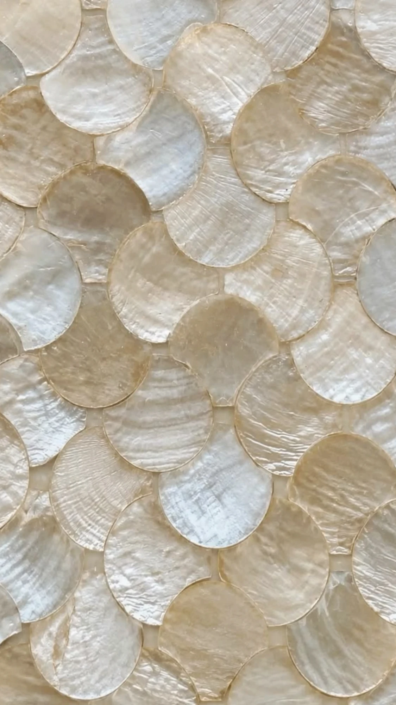
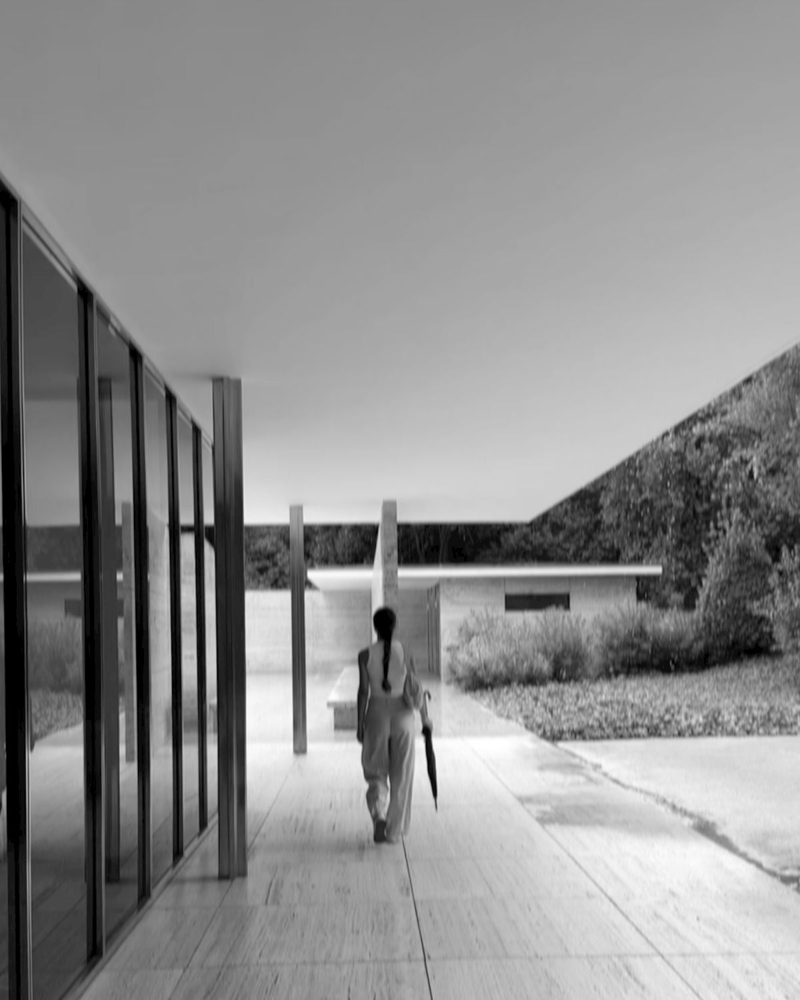
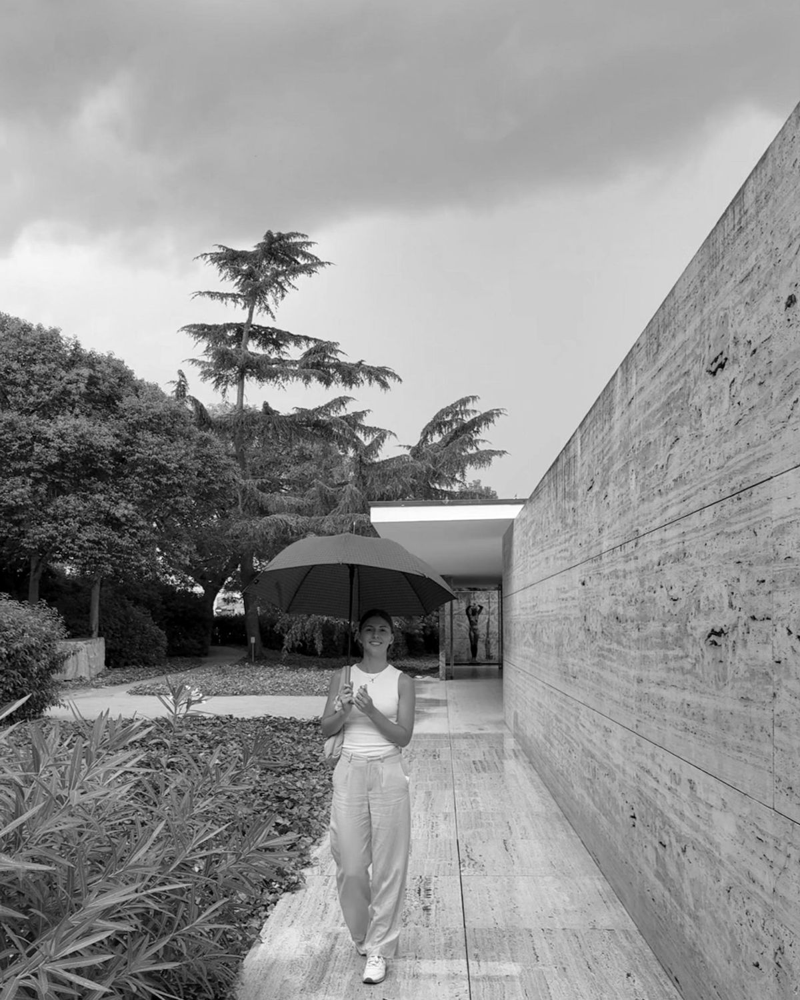

Diseño a medida.




Diseño a medida, y con personalidad.






Diseñamos espacios que se atreven a tener personalidad propia.
Nuestro recorrido comenzó en Buenos Aires y continuó en Barcelona, donde sumamos experiencia y una mirada que todavía hoy nos acompaña. De ahí viene también nuestra fascinación por la frescura mediterránea.
Hoy, de regreso en Argentina y con sede en Neuquén Capital, en plena Patagonia, incorporamos a nuestros proyectos una mirada viajera, alimentada por distintas culturas, ciudades y formas de habitar. Nos gusta descubrir ideas en diferentes lugares, mezclarlas y reinterpretarlas desde una mirada propia.
Referencias mediterráneas, identidad porteña y esencia patagónica se encuentran en nuestra manera de diseñar. Una mezcla que nos permite crear interiores con carácter, donde el diseño tiene intención y cada proyecto encuentra su propia personalidad.


Soy Lucía, Diseñadora de Interiores.
El diseño siempre fue una forma de mirar y de entender los espacios. Me gusta observarlos, imaginar qué podrían ser y descubrir cómo, a través de los materiales, la luz, las texturas y los detalles, se puede transformar por completo un lugar.
Disfruto mucho de ese proceso de buscar, probar, combinar y encontrar ese detalle que termina haciendo la diferencia. Me atraen los espacios que tienen personalidad, que se sienten reales y que de alguna manera cuentan algo de las personas que los habitan.
Creo que el diseño también está en las cosas más simples: en un objeto que me llama la atención, en una textura, en una obra de arte, en una combinación de colores o en cómo entra la luz a un ambiente. Es algo que está muy presente en mi día a día y que disfruto mucho.
Diseñar es, en definitiva, una de las formas que encontré de expresar lo que me gusta y cómo veo el mundo.
Metodología
Escuchar antes de proponer.
Primera consulta para entender el espacio, el modo de vida o el negocio, y los objetivos del proyecto.
Concepto con identidad propia.
Desarrollo de una propuesta creativa con identidad propia: paleta, materialidad y distribución.
De la idea a la materia.
Documentación técnica, selección de proveedores y seguimiento de obra o instalación.
Un espacio listo para vivirse.
Espacio terminado, fotografiado y presentado — listo para ser habitado o mostrado al público.